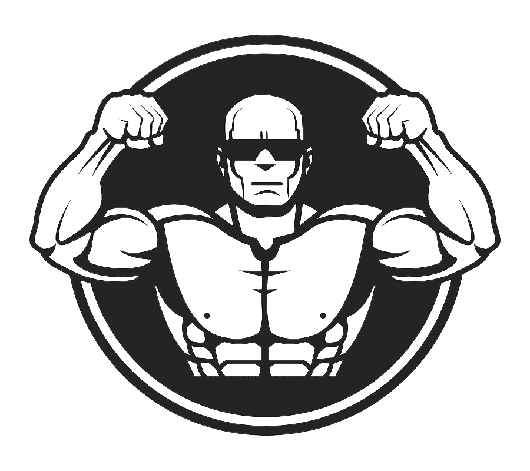
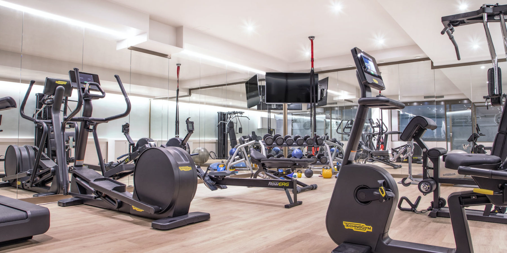

FitPlace



1
2
3
La musculation, à proprement parler, voit le jour au 20ème siècle grâce à un homme. Edmond Desbonnet à qui l'on doit la culture physique, telle qu'elle existe avec ses différents exercices. Personne avant lui n'avait songé à l'entrainement méthodique, ni à étudier les effets des exercices musculaires localisés sur le corps. Edmond est à l'origine de ce que l'ont connait de la musculation d'aujourd'hui mais, en réalité, la Chine utilisais déjà, d'une façon ce sport sous la dynastie Chou. Pour entrer à l'armée, le test consistait à soulever des lourdes charges. Confucius, également, se serait entraîné selon le principe de la resistance progressive. Mais cette pratique a évoluer avec le temps jusuq'a aujourd'hui ou les gens peuvent en pratiquer dans une salle de musculation, dehors, dans un park de street. Elle a évoluer pour laisser naitre de nouveaux concepts comme le street workout qui est un coté un peu "freestyle" de la musculation, le bodybuilding avec ses compétitions, le crossfit ayant pour objectif l'optimisation de la compétence physique du participant dans chacun de dix domaines de conditionnement physique reconnus.
Le monde de la musculation est un monde très vaste puisqu'il offre la possibilité d'atteindre différents objectifs avec chacun une façon différente d'y parvenir comme par exemple :
L’avantage premier de la musculation, c’est d’augmenter la masse musculaire, et par la même occasion, le métabolisme. Qui dit plus de muscles, dit plus d’énergie à dépenser pour les faire fonctionner, dit plus de calories dépensées au quotidien. Et ce, même quand vous ne vous exercez pas. L’augmentation de votre masse musculaire et de votre métabolisme va également vous permettre de brûler plus de graisses, et pendant plus longtemps. Vous continuerez à brûler des calories jusqu’à 72 heures après la fin de votre entraînement ! Faire de la musculation vous aidera donc à augmenter votre masse musculaire et à réduire votre masse adipeuse. Contrairement à la plupart des régimes hypocaloriques qui font fondre graisse et muscle. Avec pour résultat, le fameux effet « skinny fat » : cet état où on a le poids désiré mais le corps manque tellement de fermeté que le rendu visuel et esthétique ne vous convient pas. Vous éviterez cela si vous vous appuyez sur la musculation pour mincir.